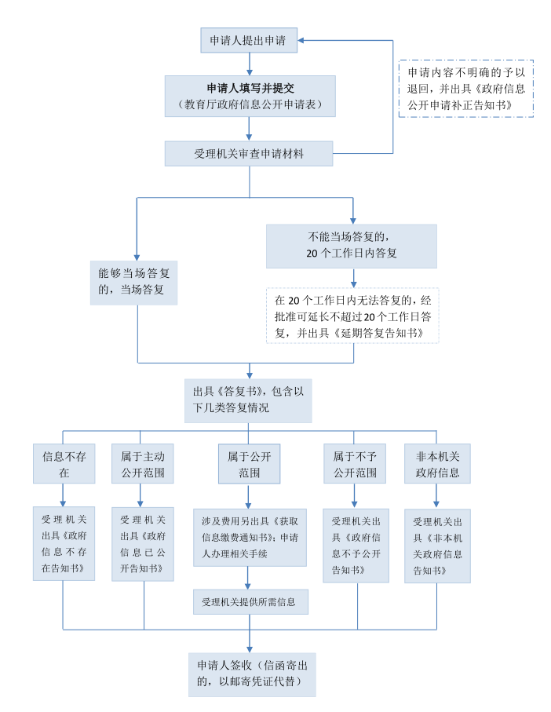

四川省教育厅科学技术处-四川省教育服务公共平台网站
四川省教育厅科学技术处-四川省教育服务公共平台网站
四川省教育厅科学技术处-四川省教育服务公共平台网站
四川省教育厅科学技术处-四川省教育服务公共平台网站
为了保障公民、法人和其他组织依法获取教育厅政府信息，进一步提高教育工作的透明度，促进依法行政，建设法治政府，根据《中华人民共和国政府信息公开条例》（国务院第711号令）和《四川省教育厅科学技术处-四川省教育服务公共平台网站政府信息公开暂行规定》，制定本指南。
本机关按照法律、行政法规对政府信息公开权限的规定公开本机关制作的或从公民、法人或者其他组织获取的政府信息。
本机关公开的政府信息分为主动公开和依申请公开两部分。
一、主动公开
本机关主动公开下列政府信息：
1.行政法规、规章、规范性文件；
2.机关职能、机构设置、办公地址、办公时间、联系方式;厅领导成员姓名、职务、简历、分工；
3.四川教育发展的规划、方针、政策，重要工作部署及实施情况；
4.教育年度统计信息；
5.教育行政许可的设定、调整和取消情况，行政许可事项及其法律依据、办事条件、办理程序、审批时限以及受理机构的联系方式，需要提交的全部材料目录、行政许可的办理结果等；
6.教育招生、考试、收费、资助等与公众切身利益密切相关的重要事项的政策；
7.干部人事任免、公务员录用、专业技术职务评聘的相关政策；
8.全国性、全省性教育表彰奖励的有关情况；
9.教育系统突发公共事件的应急预案、预警信息及应对情况；
10.本厅公务员招考的职位、名额、报考条件等事项以及录用结果；
11.法律、行政法规、规章规定应当公开的其他政府信息。
主动公开信息具体内容详见《教育厅政府信息公开目录》。本机关将通过教育厅门户网站（http://scest.net/）、政府公报、新闻发布会和其他新闻媒体等途径主动公开上述信息。
二、依申请公开
本机关受理公民、法人和其他组织提出的信息公开申请。
申请人申请的政府信息属于下列情形之一的不予公开：
●涉及国家秘密的；
●涉及商业秘密、个人隐私的（经权利人同意公开的除外）；
●内部事务信息，过程性信息，行政执法案卷信息；
●法律、行政法规规定不得公开的其他信息。
本机关依申请提供政府信息时，一般根据掌握的该信息的实际状态进行提供，不对信息进行加工、统计、研究、分析或者其他处理。
1.受理机构
机构名称：四川省教育厅科学技术处-四川省教育服务公共平台网站政策法规与综合改革处
办公地址：成都市青羊区陕西街26号
受理时间：9：00-11：30，14：30-17：00（法定节假日除外）
联系电话：028-86110612
传真号码：028-86110612
电子邮箱：scsjytxxgk@126.com
通信地址：成都市青羊区陕西街26号
邮政编码：610041
2.申请提出
申请人提出申请时，应填写《教育厅政府信息公开申请表》（见附件，以下简称申请表）。申请表可以在教育厅网站在线填写或下载，也可以到受理机构自行领取或复制。
（1）网上申请
申请人可通过电子邮件方式提出申请。请从教育厅网站下载申请表，填写后发送至受理邮箱（scsjytxxgk@126.com）。申请信息到达电子邮箱服务器的时间后，双方确认之日为申请之日。
（2）书面申请
申请人可通过信函、传真等方式提出申请。申请人可在教育厅网站下载申请表，填写后寄送至受理机构。通过信函方式提出申请的，请在信封左下角注明“政府信息公开申请”字样；通过传真方式提出申请的，请相应注明“政府信息公开申请”字样。以邮寄信函方式提交申请的，受理机构签收之日为申请时间；以平常信函、传真等无需签收的方式提交申请的，受理机构在实际收到申请的当日与申请人确认，确认之日为申请时间；未提供联系电话或电话无法接通的，待恢复与申请人联络之日启动处理程序并计算期限。
（3）当面申请
申请人可当面提出申请。申请人可到受理机构现场领取申请表，填写完毕后当面提交。现场提交的时间为申请时间。
（4）申请要求
申请公开教育厅政府信息应当提供下列内容：
●申请人的姓名或者名称、身份证明或证明文件、联系方式；
●申请公开的政府信息的名称、文号或者便于行政机关查询的其他特征性描述；
●申请公开的政府信息的形式要求，包括获取信息的方式、途径；
一张申请表只能申请一项信息，申请人对所需信息的描述应尽量详尽、明确。若有可能，请提供该信息的标题、发布时间、发文字号或者其他有助于明确该信息的提示。
3.申请处理
（1）审查
收到申请后，本机关将依据信息公开条例对申请的形式要件是否完备进行审查。
（2）答复
政府信息公开申请内容不明确的，行政机关应当给予指导和释明，并自收到申请之日起7个工作日内一次性告知申请人做出补正，说明需要补正的事项和合理的补正期限。答复期限自行政机关收到补正的申请之日起计算。申请人无正当理由逾期不补正的，视为放弃申请，行政机关不再处理该政府信息公开申请。
自收到申请之日起20个工作日内，本机关将按照下列情况给予书面答复：
①属于教育厅已主动公开范围的，出具《政府信息已公开告知书》，告知申请人获取该信息的方式和途径。
②所申请公开的信息可以公开的，向申请人提供该政府信息，或者告知申请人获取该政府信息的方式、途径和时间。
③申请公开的政府信息中含有不应当公开的内容或者不属于政府信息的内容，但是能够做区分处理的，出具《政府信息部分公开告知书》，并对不予公开的内容说明理由。
④本机关依法决定不予公开的，出具《政府信息不予公开告知书》，告知申请人并说明理由。
⑤申请公开的政府信息经检索不存在的，出具《政府信息不存在告知书》告知申请人。
⑥申请公开的政府信息不属于本机关负责公开的，出具《非本机关政府信息告知书》，能够确定负责公开该信息的行政机关的，应告知申请人该行政机关的名称和联系方式。
因故在规定期限内未做出答复的，可以将答复期限适当延长并告知申请人，延长答复的期限最长不超过20个工作日。申请公开的政府信息涉及第三方权益的，征求第三方意见所需时间不计算在规定期限内。因不可抗力或者其他法定事由不能在规定期限内做出答复的，期限中止，障碍消除后恢复计算。
（3）提供信息
上款②、③情形下，本机关将向申请人提供有关的政府信息。
4.收费标准
行政机关依申请提供政府信息，不收取费用。但是，申请人申请公开政府信息的数量、频次明显超过合理范围的，行政机关可以收取信息处理费。
四川省教育厅科学技术处-四川省教育服务公共平台网站政府信息公开指南流程图
